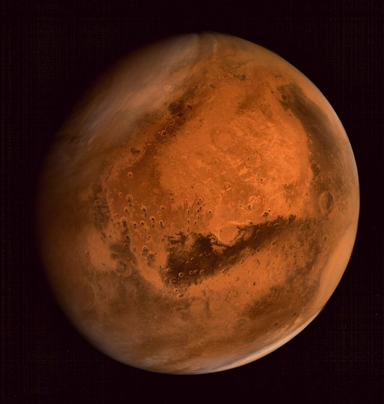

Mars is the fourth planet from the Sun.

Mars
Mars is the fourth planet from the Sun and the second smallest planet in the Solar System, after Mercury. Named after the Roman god of war, it is often described as the "Red Planet" because the iron oxide prevalent on its surface gives it a reddish appearance.
Orbital Characteristics
- Aphelion
- 249 200 000 km
- Perihelion
- 206 700 000 km
- Orbital period
- 686.971 d
- Semi-major axis
- 227 939 100 km
Physical Characteristics
- Mean radius
- 3389.5±0.2 km
- Mass
- 6.4185×1023 kg
- Volume
- 8.87 m/s2
- Polar radius
- 3,376.2±0.1 kg